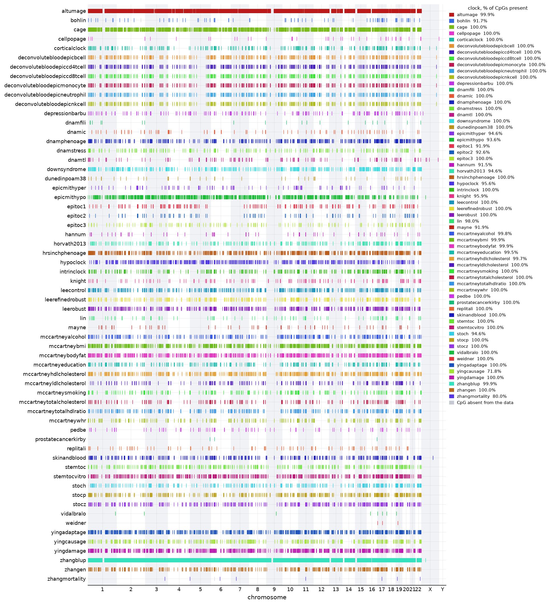

Preparing data and coverage
The steps between a preprocessed input matrix and a clock score: identifier harmonisation, clock coverage and imputation
Preparing the input
The input contract
FALCONAge does not normalise, filter probes or run sample QC. The input is a matrix that has already been through those steps upstream, for example in the methylarray pipeline, minfi or SeSAMe. What fa.prepare() (CLI: falconage prepare) applies is limited to what scoring requires: identifier harmonisation, EPIC v2 replicate collapse, clipping to the beta range and platform detection.
Rows are samples, columns are features. Feature names are the identifiers the clock coefficients use: cg00000029 for methylation probes, and the declared analyte names for clinical chemistry and NMR. fa.FalconData holds the matrix in X, sample metadata (age, sex, tissue, group) in obs, and per-feature annotation in var; it reads and writes AnnData’s .h5ad.
EPIC v2 probe aggregation
EPIC v2 column names look like cg00000029_TC21. fa.prepare() strips the suffix and averages replicate probes of the same CpG before anything else. Skipping this means every clock sees almost no overlapping features on EPIC v2 data.
Two distinct imputation stages
Stage 1 - dataset-level, before the clock. fa.preprocess.impute() with median (default), mean or none, run only when asked.
Stage 2 - clock-level, for features the dataset does not contain at all. Filling with zero in beta space means “fully unmethylated”, which is biologically wrong for most sites, so FALCONAge never does it.
What FALCONAge does, and what the R packages do. For a linear clock FALCONAge fills an absent feature with the mean of the clock’s observed features over the whole dataset: one constant, the same for every absent feature and every sample (models/linear.py). imputation="reference" replaces it with a per-feature value wherever a reference is supplied. The mitotic mean, percentile and transmission clocks (epiTOC1/2/3, HypoClock, EPICmitHyper/Hypo, stemTOC, stemTOCvitro) are the exception: their published statistic is taken over the sites present, so FALCONAge leaves absent sites out and records imputation: "excluded". methylclock 1.16.0 leaves absent CpGs out of the sum (predAge in R/internals.R), which is a fill of 0. dnaMethyAge 0.2.0 fills each one with its per-probe mean from the package’s golden_ref table (meanImputation, called from methyAge). Each policy adds the same amount to every sample, so on one dataset the packages differ by a constant
Δ = Σ_{j absent} w_j (f_j − g_j)where w_j is the coefficient and f_j, g_j are the two fills. For Horvath’s clocks the constant is multiplied by 21 above the adult age of 20, where the anti-log transform is linear.
On a dataset that lacks some of a clock’s CpGs, the packages in circulation fill them differently (methylclock and dnaMethyAge among them), and that alone can move the same clock’s age by several years between packages that agree on every coefficient and intercept. Given identical complete input there is no difference to explain: the conformance suite in test/conformance/ scores 75 clock-package pairs on the same filled matrix, and every difference left over is traced to a coefficient copy that departs from its primary source. The offsets belong to a dataset’s missing CpGs, not to the clocks, so the registry does not carry them as per-clock discrepancies. The coverage record (res.coverage[clock_id]) gives the number of values filled (n_imputed) and the method (imputation). Neither 0 nor a pooled mean is a published value for a CpG, which is why a per-CpG reference from each clock’s own training data is the better fill.
Horvath’s normalisation is optional in his own code, and the packages default differently. Horvath 2013 supplied a calibration step (Additional file 24, BMIQcalibration): each sample’s betas over 21,368 probes are mapped onto the distribution of goldstandard2, the per-probe means in Additional file 22 (Genome Biology, CC BY 2.0), after absent probes are set to those means. dnaMethyAge 0.2.0 runs it by default for HorvathS2013 (simple_mode = TRUE skips it), methylclock 1.16.0 does not (normalize = FALSE), and FALCONAge offers it as an opt-in step, fa.preprocess.horvath_normalise() (R: horvath_normalise()). The step mostly moves the level of Horvath 2013 age rather than the ranking of samples, so a comparison across packages has to say whether it ran.
horvath_normalise() is a port of BMIQcalibration. The R code fits its beta mixtures on 20,000 probes drawn by set.seed(1); sample(...) and stops its optimisers early (Nelder-Mead after 50 evaluations), so its result depends on the exact draw and the exact optimiser path; the port reproduces each piece as R computes it (the Mersenne-Twister draw, optim’s Nelder-Mead and BFGS, RPMM’s blc, density()). Against the unmodified Additional file 24 it agrees to 3e-10 in beta on a synthetic fixture and to 2e-8 years of Horvath age on the 120 samples above, reproducing the −1.87-year shift. Two arguments follow the code people actually ran:
| Argument | Default | The other value |
|---|---|---|
absent |
"drop": calibrate on the gold-standard probes the data carry, as Knight et al.’s published wrapper does |
"fill": set absent probes to their gold-standard value first |
sample_kind |
"Rejection": R 3.6.0 and later |
"Rounding": the draw of earlier R |
With sample_kind="Rounding", Knight et al.’s own test dataset gives 37.3665, 38.3463 and 39.322 weeks against the 37.366, 38.346 and 39.324 their instructions state; the remaining 0.002 is their k-nearest-neighbour imputation of 51 missing values. Only the 21,368 gold-standard probes are changed, and a missing value is set to its gold-standard value first, as Horvath’s code does for a single sample; both counts are recorded in uns["horvath_normalisation"].
Reporting the imputation method alongside a score is not optional; it changes the answer, and the run manifest records it.
Preprocessing steps that live inside a model
These are per-clock and must run after feature selection, not before:
| Step | Clocks in the catalogue |
|---|---|
robust scale (x − median)/std |
AltumAge |
| per-sample z-score across features | ZhangEN, ZhangBLUP |
| mean over non-missing | epiTOC1, HypoClock, EPICmitHyper, EPICmitHypo |
| 0.95 quantile over non-missing | stemTOC, stemTOCvitro |
| nan → 0 | epiTOC2, epiTOC3 |
| NaN → reference value | most linear clocks |
Methylation clock coverage
Coverage across the genome
Every falconage run on methylation data draws this figure first, before any clock is scored. It is written to figures/clock_coverage_across_the_genome.png, with its legend text in the .txt file beside it, and includes clocks added with --clocks-dir.

Python: fa.plot.clock_coverage_manhattan(data), or platform="EPICv2" without data. R: plot_clock_coverage().
Coverage and weight per clock
probe_loss() reports, per clock, how many features are present and how much of the model’s weight they carry. The second number is the one that detects EPIC v2 probe loss:
fa.probe_loss(d, clocks="scoreable")probe_loss(d, clocks = "scoreable") tier n_features n_present coverage mass_coverage bias_years heaviest_absent
horvath2013 bundled 353 339 0.9603 0.9715 -1.2570 cg11932564 (0.8%), ...
hannum bundled 71 64 0.9014 0.8994 1.0279 cg21139312 (2.7%), ...
zhangmortality bundled 10 9 0.9000 0.7687 0.0124 cg08362785 (23.1%), ...Three rows of the table for the EPIC v2 series in the test corpus (GSE330325). zhangmortality has nine of its ten CpGs, 90% by count, and the one it lacks carries 23% of its weight.
bias_years is filled in when the platform is one the shift has been measured on; see what probe loss costs. NaN there means not measured, never no bias.
A clock at 96% feature coverage and 61% weight coverage has kept nearly all its probes and lost the ones that matter. The scoring floor applies to both measures, so this run would be refused with a message naming the heaviest absent probes rather than returning a confident number.
Clock CpGs removed by upstream probe QC
A clock CpG can be absent for two reasons. The array may not carry it (platform loss), or the array carried it and a probe filter removed it afterwards. FALCONAge separates the two with a table, bundled with the package, of which Illumina arrays (27K, 450K, EPIC v1, EPIC v2) carry each clock CpG (fa.preprocess.platform_probes()). When removed CpGs carry at least 1% of a clock’s absolute weight, score() raises a probe_qc warning naming the heaviest of them, and the coverage record gives n_removed_by_qc and qc_removed_mass.
SNP, cross-reactive and detection filters are designed for association studies. For clock scoring, pass the matrix taken before probe filtering: the clock weights were fitted on those probes, and an imputed value replaces each one that is removed.